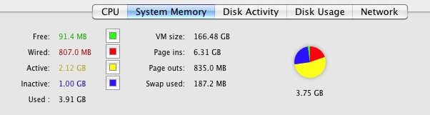

The memory management OS X automatically allocates memory and sets its contents according to the situation. The types of system memory are: Free, Physical, Active and Inactive.
The sum of these four types is the total of random access memory (RAM) installed on the Mac. The RAM is the high-speed memory used to store information that is being used or has been used more recently. The information is loaded into RAM from the Mac hard disk during startup and when you open applications and documents.
The following image is an example of the state of the system memory, view from the activity monitor, showing the different types of memory:

Each elemment of t, have a different function:
Free Memory: The amount of RAM that is not being used.
Physical Memory:. Information in RAM that can not move to the Mac hard drive depends on the application you are using.
Active Memory: Information that is currently in RAM and has recently been used.
Inactive memory: Information is in RAM, but is not actively used, although it has been used recently. For example, if you've been using an application and then you close it, the RAM that used the application, becomes inactive memory, which is available to other applications, like free memory. However, if you re-open it before another application uses the inactive memory, it will start faster because the Inactive memory is converted to Active memory, instead of having to load the application from the hard disk, which would be slower.
Memory in use: The total amount of RAM in use.
Virtual Memory Size: The amount of virtual memory for all processes of your Mac.
Page (inputs) / Page(outputs): Refers to the amount of information moved between RAM and the hard drive of Mac This number represents the amount of data accumulated that OS X has moved between RAM and the hard disk. The number in brackets shows the recent page activity. Page outputs are produced when your Mac has to write information from RAM to the hard disk because RAM is already full. Adding more RAM may reduce page outs.
Swap space used: The amount of information copied to the swap file on your hard disk.